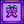

Stardrop
| Stardrop | |
| A mysterious fruit that empowers those who eat it. The flavor is like a dream... a powerful personal experience, yet difficult to describe to others. | |
| Information | |
| Source | Various |
| Buff(s) | |
| Buff Duration | |
| Energy / Health |
|
A Stardrop is a special item that permanently increases the player's maximum energy by 34 points. The player must immediately consume any Stardrop as soon as it is obtained; it is impossible to add a Stardrop to inventory or save it to eat later.
A maximum of seven Stardrops are available in any game, which together result in 508 maximum energy, nearly doubling the initial value of 270. Finding all Stardrops is necessary to achieve Perfection.
Consuming a Stardrop will restore all of the player's energy as well as increase maximum energy, regardless of how low the energy was before consuming it. No health is restored when consuming a stardrop.
Locations
One Stardrop can be obtained from each of the following sources:
- Sold for
 2,000 at the Stardew Valley Fair.
2,000 at the Stardew Valley Fair. - Obtained from the treasure chest on floor 100 in the Mines.
- From the player's spouse or roommate when friendship level reaches 12.5 hearts.
- In multiplayer games where two players marry each other, a stardrop appears in a giftbox in front of each player when they enter their home after the wedding.
- Only one spouse/roommate stardrop can be obtained, regardless of divorce or remarriage.
- Sold by Krobus for
 20,000g in the Sewers.
20,000g in the Sewers. - Obtained from Old Master Cannoli in the Secret Woods after giving him a Sweet Gem Berry.
- Received in a letter from Willy the day after attaining the Master Angler Achievement.
- Reward for donating all 95 items to the Museum.
Text
When consumed, one of two possible texts is displayed, both referencing the "Favorite Thing" set when creating a new profile:
- "It's strange, but the taste reminds you of [Favorite Thing]."
- "Your mind is filled with thoughts of [Favorite Thing]."
Secret Text
If the "Favorite Thing" is set to "ConcernedApe":

If the "Favorite Thing" is set to anything containing "Stardew":

- Note that the words "ConcernedApe" and "Stardew" must be capitalized exactly as shown here.
Trivia
- Stardrops used to be called "Cosmic Fruit" in early versions of the game. (forum post)
- Willy mentions a Stardrop in his story at the Feast of the Winter Star. He says that some people claim the Stardrop is somehow connected to the Winter Star that is only visible from Stardew Valley.
- After achieving Perfection, a stone carving of a Stardrop will appear above Grandpa's Shrine.
- Prior to version 1.3.27 a Stardrop could be taken into inventory and then placed in a Chest, gifted (as a universally hated gift), used in the Grange Display at the Stardew Valley Fair, or sold in the shipping bin for 7,777g. As of v1.3.27, a stardrop obtained using the item ID glitch can still be sold in the shipping bin or gifted as a universally hated gift in PC or mobile versions of the game.
- The Stardrop was added to the game Terraria with ConcernedApe's permission in October 2022.
Gallery
Sold for
7,777g
Placed in grange display
Animated
Achievements
Finding seven Stardrops unlocks one extra Achievement on Steam, Playstation, and Xbox:

Mystery Of The Stardrops (Find every stardrop)
History
- 1.3.27: Added Stardrop from spouse in multiplayer. Fixed bugs allowing a Stardrop to be taken into inventory.
- 1.4: Fixed bug where extra text was appended at the end of the favorite thing dialogue text.
- 1.5: Finding all Stardrops is now required to achieve Perfection.
- 1.6.9: Fixed stardrop tooltips showing incorrect health/energy recovery amounts.